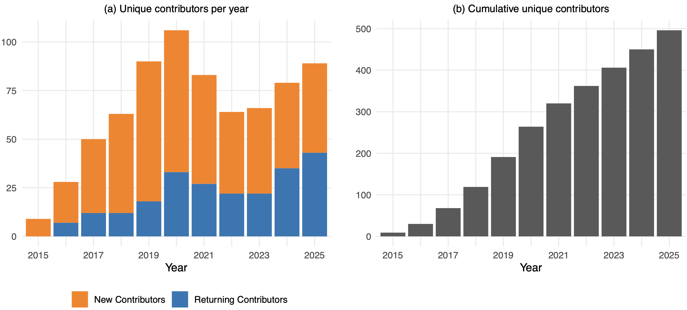
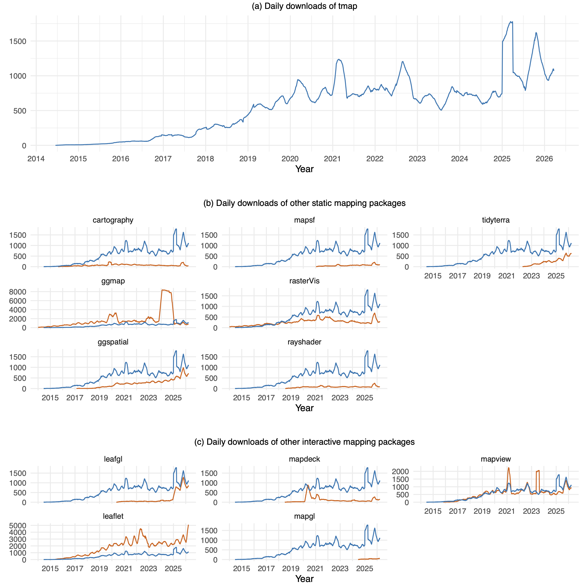
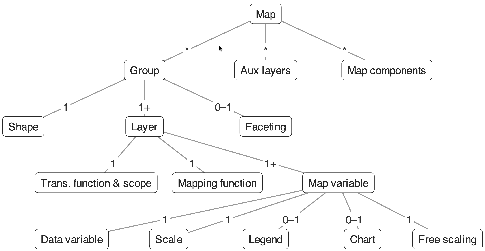
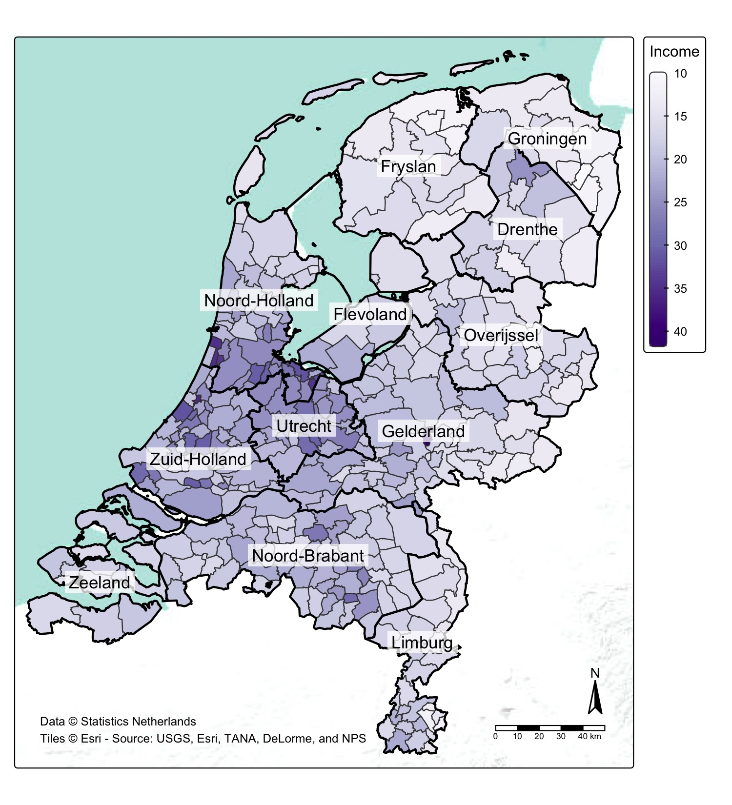
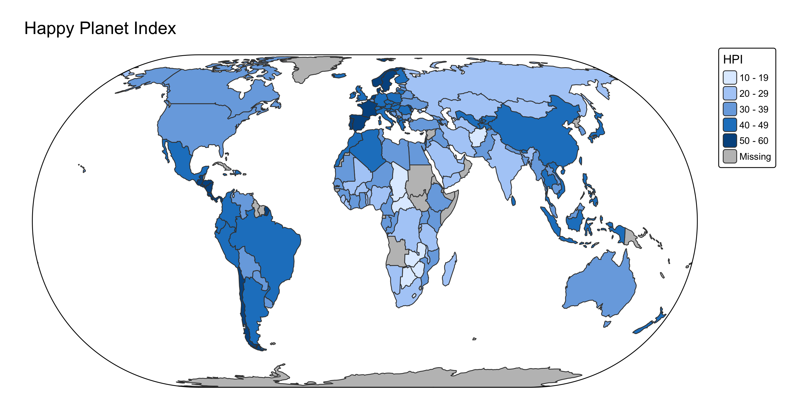
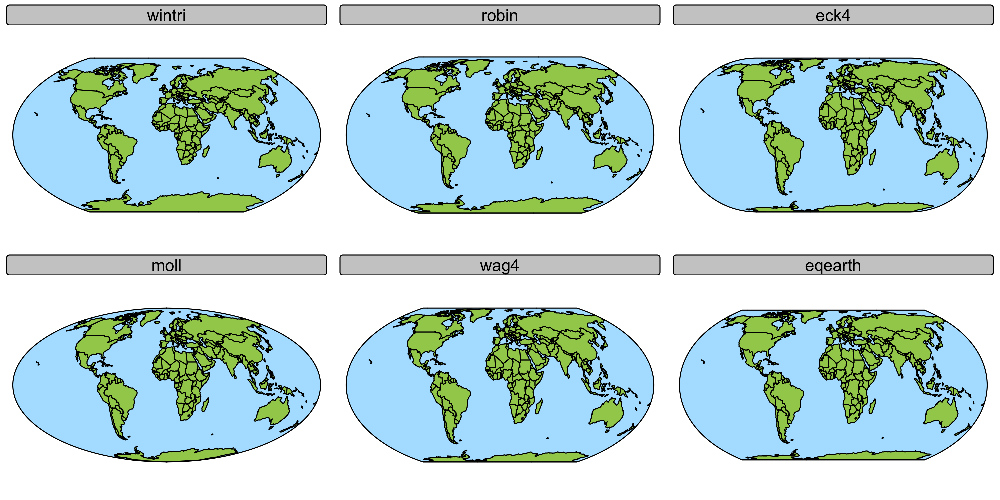
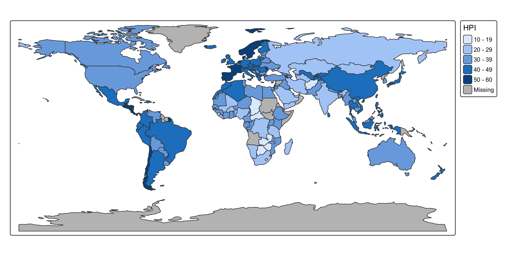
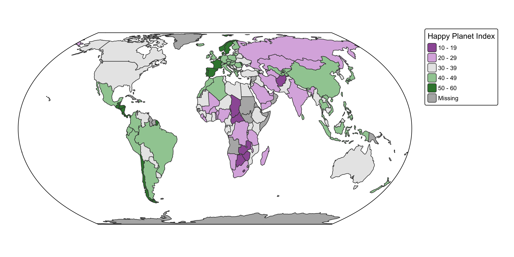
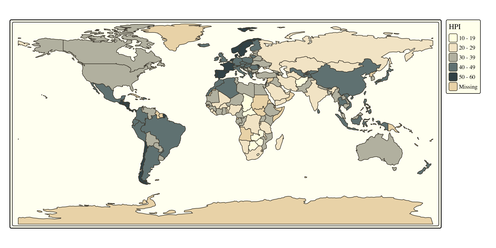

install.packages(c("tmap", "cols4all", "tmap.glyphs", "tmap.cartogram",
"tmap.networks", "geofacet", "sfnetworks", "maptiles"))
remotes::install_github("rogerbeecham/gridmappr")Advanced Static Cartography in R
Session 1: Introduction and overview
Martijn Tennekes
About this course
Goal
- Use tmap as a flexible framework for advanced static cartography
- Go beyond the standard choropleth: bivariate maps, glyphs, grid maps, cartograms, networks, insets
- Make well-designed, publication-quality thematic maps
- Make informed design choices: colors, visual hierarchy, basemaps
Schedule
| Day | Sessions |
|---|---|
| 1 | 1. Introduction and overview · 2. Designing effective thematic maps · 3. Color palettes · 4. Bivariate and multivariate maps |
| 2 | Review of exercises · 6. Glyph maps · 7. Grid maps · 8. Cartograms |
| 3 | Review of exercises · 10. Insets · 11. Network maps · 12. Basemaps and final map design |
Software used
| Package | Purpose |
|---|---|
tmap (≥ 4.4) |
the core: layered grammar of thematic maps |
cols4all |
analysing and choosing color palettes |
tmap.glyphs |
donut, pie and flower glyph maps |
tmap.cartogram |
contiguous, non-contiguous and Dorling cartograms |
tmap.networks |
sfnetwork support: edges and nodes |
geofacet, gridmappr |
grid layouts for grid maps |
sf, stars, terra, sfnetworks |
spatial data classes |
Cartography in R
Software to visualize spatial data
- Traditional GIS software: ArcGIS, QGIS, GRASS
- Data science programming languages: Python, R, Julia
- Web technologies: JavaScript
Traditional GIS software
Proprietary: ArcGIS Free/open-source: QGIS, GRASS
- Comprehensive cartographic toolkits with rich graphical user interfaces
- No programming required
- Workflows are point-and-click: reproducibility and integration with statistical analysis are harder
Data science programming languages
Python, R, Julia
- Require programming skills
- Support scripted, reproducible workflows
- Maps can be regenerated whenever the data change
- Multiple ‘competing’ and complementary packages foster innovation
R packages for static maps
| Package | Also non-spatial | Static | Interactive | Extendable |
|---|---|---|---|---|
| ggplot2 | ✅ | ✅ | - | ✅ |
| tmap | - | ✅ | ✅ | ✅ |
| mapsf | - | ✅ | - | - |
| rasterVis | - | ✅ | - | - |
| rayshader | - | ✅ (3D) | - | - |
Compared: tmap vs ggplot2 · tmap vs mapsf
Why tmap for advanced cartography?
- Cartographic concerns are part of the grammar: classification, legends, map components, layer types
- Dedicated scales for each map variable (color, size, shape, line width, …)
- Rich layout and positioning system for legends and other map components
- Extension packages add new layer types: glyphs, cartograms, networks
- The same code can also be shown interactively (
"view"mode)
This course: plot mode
tmap has two built-in modes:
"plot": static maps, using the grid graphics package. The primary mode, suited to publication-ready maps with extensive customization options."view": interactive maps using Leaflet
In this course we work in "plot" mode.
A brief history of tmap
Evolution
| Version | Year | Key changes |
|---|---|---|
| 0.6 | 2014 | First CRAN release |
| 1.0 | 2014 | Common map layers and components |
| 1.4 | 2015 | Interactive mapping (Leaflet) |
| 2.0 | 2018 | Migration from sp to sf; basemaps |
| 2.3 | 2019 | Shiny integration |
| 3.0 | 2020 | Migration from raster to stars |
| 4.0 | 2025 | Fully extensible; generic layer functions |
| 4.1 | 2025 | Sharper basemaps in plot mode; animation support |
| 4.2 | 2025 | Inset maps and minimap for plot mode |
| 4.3 | 2026 | External data source support; text enhancements |
| 4.4 | 2026 | Layer blending; hitbox for interactive layers |
Beware of outdated sources
- Version 4 is a rewrite: the syntax of layer functions has changed
- Many online tutorials, blog posts, (and AI answers!) still use version 3 syntax
- Version 3 code still runs, but with messages about how to update it
Main documentation: https://r-tmap.github.io/tmap/
GitHub community

GitHub contributors per year (new and returning).
tmap downloads in context

Daily downloads, smoothed 91-day rolling average. Orange = other packages; blue = tmap for comparison.
Extensions (as of 2026)
| Package | What it adds |
|---|---|
tmap.cartogram |
tm_cartogram(), tm_cartogram_ncont(), tm_cartogram_dorling() |
tmap.glyphs |
tm_donuts(), tm_pies(), tm_flowers() — glyph maps |
tmap.networks |
tm_network(), tm_edges(), tm_nodes() — network maps |
tmap.mapgl |
"mapbox" and "maplibre" rendering modes |
tmap.sources |
access remote sources (PMTiles) |
The first three are central in this course. Except for tmap.cartogram, these packages are in an early development stage.
tmapverse
A convenience meta-package: one library() call attaches tmap, its extensions and supporting packages.
| Attached | Packages |
|---|---|
| tmap and extensions | tmap, tmap.glyphs, tmap.cartogram, tmap.networks, tmap.mapgl |
| spatial data classes | sf, stars, terra |
| color palettes | cols4all |
- Practical for day-to-day work; in scripts and packages, explicit
library()calls make dependencies clearer - In this course, packages are loaded explicitly when they are introduced; feel free to use
library(tmapverse)instead
Grammar of thematic maps
Layered Grammar of Thematic Maps (LGoTM)

A Map contains Groups, Aux layers, and Map components. Each Group has a Shape and one or more Layers.
LGoTM in words
- A map is composed of groups, each with a shape and one or more layers
- Each layer has a transformation function that transforms features before mapping
- Geometric: e.g.
tm_symbols()applied to polygons → centroids - Data-driven: e.g. cartograms distort polygon geometry proportional to a variable
- Geometric: e.g.
- Each layer has a mapping function that maps data to visual properties
- Map variables (fill, col, size, lwd…) can be constant or data-driven
- Each data-driven variable has a scale, optional legend and chart
- Auxiliary layers (basemaps, graticules) and map components (scalebar, compass) complete the map
Building blocks in code
tm_shape(NLD_muni) + # Shape (group 1)
tm_polygons( # Layer: data-driven fill
fill = "income_high",
fill.scale = tm_scale_continuous(values = "brewer.purples"),
fill.legend = tm_legend(title = "Income")) +
tm_shape(NLD_prov) + # Shape (group 2)
tm_borders(col = "black", lwd = 2) +
tm_text(text = "name", bgcol = "white", bgcol_alpha = 0.75) +
tm_basemap("Esri.WorldTerrain") + # auxiliary layer
tm_compass() + # map component
tm_scalebar() # map componentLGoTM in practice

Two Groups, one auxiliary layer (basemap), and map components (compass, scalebar, credits).
Naming conventions
tm_prefix → stackable layer and component functionstmap_prefix → standalone utility functions (tmap_mode(),tmap_save()…)- Map variable arguments follow a consistent naming scheme:
fill,fill.scale,fill.legend,fill.chart,fill.free- Same pattern for
col,size,lwd,lty,shape…
- Map variable names use underscores (
fill_alpha), related arguments use dots (fill_alpha.scale)
Map variables per layer
| Layer | Map variables |
|---|---|
tm_polygons |
fill, fill_alpha, col, col_alpha, lwd, lty |
tm_symbols |
size, shape, fill, fill_alpha, col, col_alpha, lwd, lty |
tm_lines |
col, col_alpha, lwd, lty |
tm_raster |
col, col_alpha |
tm_text |
text, size, col, col_alpha, fontface, fontfamily |
Each can be constant or data-driven. Extension packages add layers with new map variables (e.g. parts for glyphs).
Scale functions
| Function | Primary use |
|---|---|
tm_scale_continuous() |
color gradients, symbol size, line width |
tm_scale_intervals() |
classified choropleth (n, style, breaks) |
tm_scale_categorical() |
categorical color or symbol shape |
tm_scale_ordinal() |
ordered categories |
tm_scale_bivariate() |
two variables → one color (bivariate) |
tm_scale_rgb() |
RGB raster images |
tm_scale_asis() |
pre-encoded values (e.g. color column) |
Map projections
CRS: in tm_shape() or tm_crs()
tm_crs(): the CRS used for plotting — recommended for regular mapstm_shape(x, crs = ...): applied during spatial processing — needed when geometry is transformed (centroids, cartograms)crs = "auto"selects a projection based on the extent: e.g. Equal Earth for world maps
CRS: in tm_shape() or tm_crs()

World map projections
Pseudo-cylindrical projections: areas (almost) proportional to real areas, while shapes are not distorted too much.
World map projections

Getting started
Installation
Demo datasets
Included in tmap:
- Vector:
World,NLD_prov,NLD_muni,NLD_dist,metro,World_rivers - Raster:
land
NLD_dist (3340 districts), NLD_muni (345 municipalities) and NLD_prov (12 provinces) contain demographic data of the Netherlands as of 2022.
First map
First map

A few improvements
A few improvements

Overview of map elements
tmap_overview() shows all available layers and components, and which modes support them:
Options and styles
tmap_options(): global options (like base Roptions())tm_options(),tm_layout(): map-specific options- A style is a saved set of options; default
"white"
Options and styles

Learn more
- Online vignettes — full reference with (step-by-step) examples
- Geocomputation with R — practical mapping chapter
- Spatial Data Visualization with tmap — upcoming book
Recap
- tmap implements the Layered Grammar of Thematic Maps
- Version 4 (2025–2026): extensible, generic layer functions, consistent syntax — beware of outdated v3 examples
- Each map variable has a scale, legend (and optional chart)
- Projections:
tm_crs()for plotting,tm_shape(crs = ...)when geometry is transformed - This course focuses on static
"plot"mode and on extensions:tmap.glyphs,tmap.cartogram,tmap.networks - Main documentation